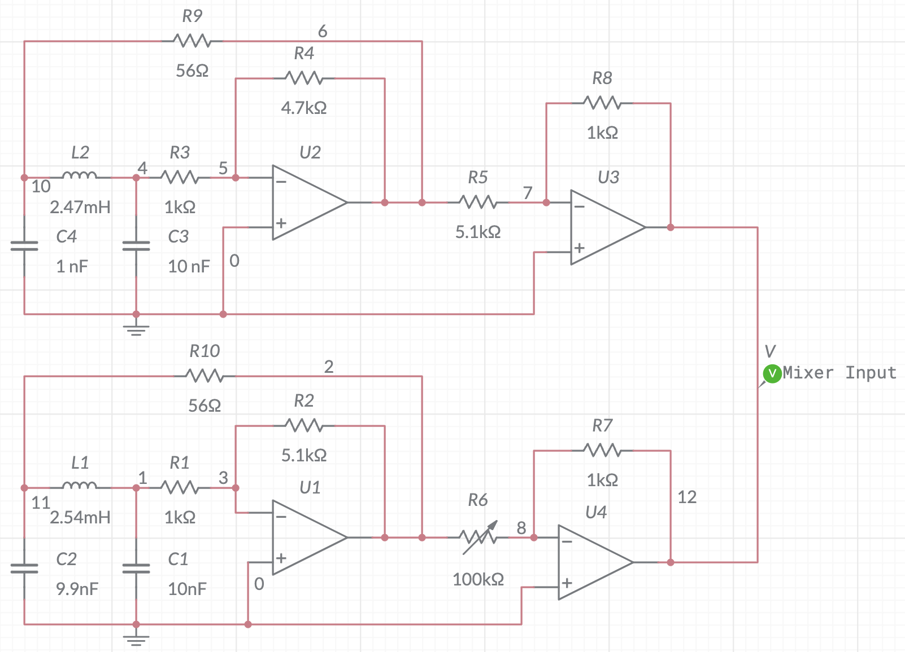
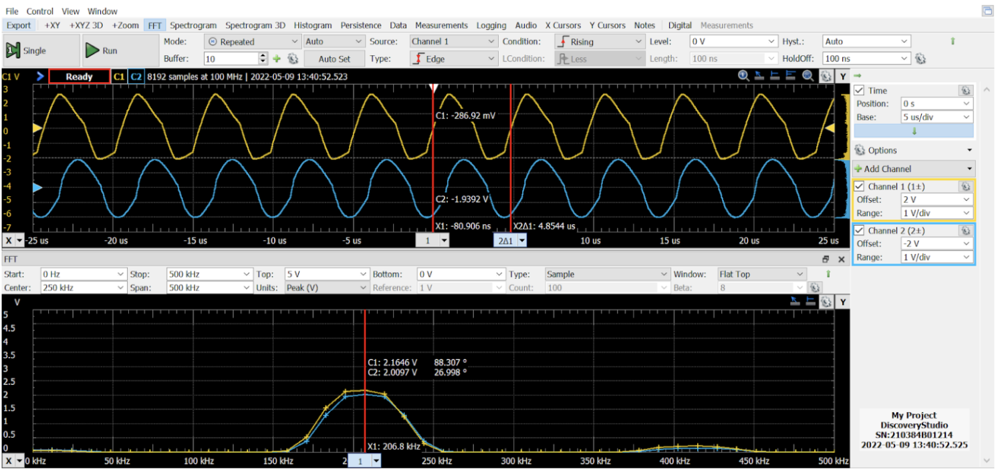
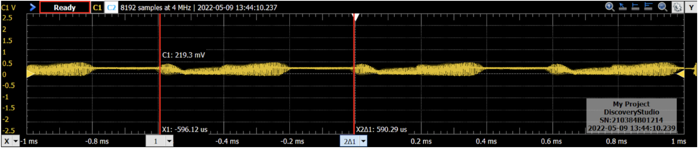

Edgar P. Vidal, Joshua Barriga
Circuit Components
The metal detector comprises of two main circuitry components: Colpit occilators that provide the a frequency input and a mixer circuit that takes the two frequency imputs and outputs a new frequency depending on whether a metal is detected

Figure 1: Here is the circuit diagram for our beat frequency metal detector. While we spent several hours tuning cercuit elements such as the capacitors and the inductors, these values may not work for your build due to the impeadance of the circuit as a whole.
(Left: Two Colpit Occilators. Right: Mixer Circuit.)
Colpit Occilators
Our metal detector is a carefully designed and calibrated device that utilizes two Clopitt oscillators operating at a closely matched frequency. While achieving an exact frequency match is challenging, a tolerance of less than 1 kHz is acceptable for our purposes. We have selected an operating frequency of approximately 205 kHz, with a realistic range around 206 kHz.
The detection mechanism involves two oscillators, one with an open coil of 50 turns (L2) acting as the primary detector, and the other utilizing a toroid with only 5 turns (L1), specifically chosen for its minimal susceptibility to interference from nearby metals.
When a metallic object passes over the primary detector, it influences the magnetic flux within the inductor, resulting in a change in inductance and, most significantly, the frequency it produces. To ensure optimal audio output, we have observed that the voltages of both oscillators need to be equalized. Therefore, we employ op-amps to step down the voltages to approximately 2.5V.
Mixer Circuits
The combined signals from both oscillators are then directed to a mixer circuit, which accomplishes two main tasks: it returns the original signal and calculates the difference and sum between the two signals. To ensure the production of audible sound, we employ low-pass filters to isolate and output only the difference in frequencies. Additionally, our mixer circuit effectively eliminates any direct current (DC) components, removing any offset that could hinder the speaker's performance.
After the signals have been filtered, the resulting audio signal is amplified using an audio amplifier, allowing it to be played through a speaker with volume control. Ordinarily, the speaker would emit a constant tone corresponding to the original frequency difference between the two oscillators. However, when a metal object is placed over the detector, the frequency of one oscillator changes, giving rise to a new frequency difference. This new difference is amplified and translated into a distinct tone.
We take great pride in presenting our meticulously crafted metal detector, showcasing its ability to detect and distinguish various metallic objects with precision and accuracy.